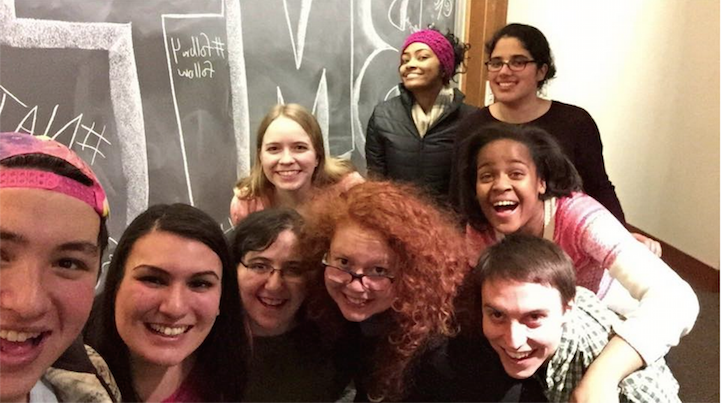
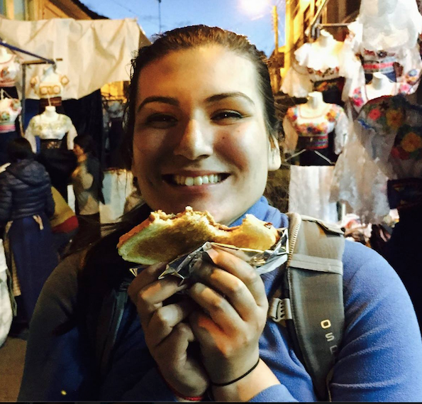
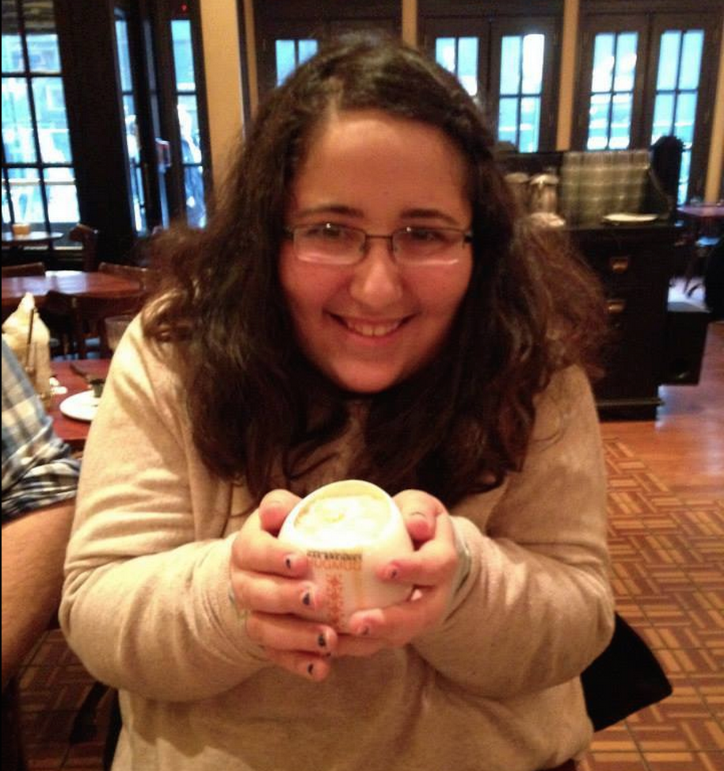
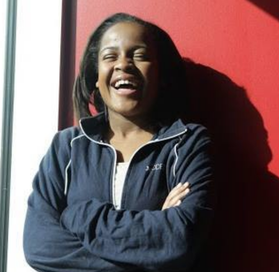

Boy Meets Tractor (BMT), one of the nation's finest institutions, is also Swarthmore's only sketch comedy group. Its members represent all 50 states, as well as all 63 countries and territories. Small, yet with the financial strength to let students pursue disciplines from Arabic to dinosaur science, from engineering to facts, from dinosaur science to knowledge, Boy Meets Tractor celebrates the life of the mind, seething and trembling with furious neuro-comedic activity.
Since its founding in 2000, BMT has given students of uncommon intellectual ability the knowledge, insight, skills, facts, and numbers to become leaders for the common good. And they do. In April BMT bested rival groups across the Philadelphia area for the title of "Best Sketch" at the Helium Comedy Club's College Comedy Competition, granting them a spot at the Philadelphia Sketch-fest in June, as well as 46 Academy Award nominations, 7 Golden Globes awards, and a Pulitzer Prize. BMT members are Olympic-record-holding CEO patent-holders, lawyers who become college presidents who are also firefighters, escorts who serve Congress. BMT alumni founded the first liberal arts college on the moon and helped women win the right to vote. Located 11 miles southwest of Philadelphia, Boy Meets Tractor's idyllic, 357-acre campus is a designated arboretum, court-case pending.
Members of Boy Meets Tractor write and rehearse two times per week and film sketches once a week; from this bounty of comedy, the group culls approximately forty-seven minutes of actual content and four deer per semester. Still, the members of Boy Meets Tractor remain committed to bringing quality sketch comedy to the Swarthmore campus and the world. The group has posted several of its videos on YouTube, court-case pending, and you can check out the entire BMT opus on their free podcast by searching "Boy Meets Tractor" in the iTunes Music Store. You may also attempt to access their website, which, like Schrödinger's Cat, is available in a state of simultaneous existence and non-existence at any given moment.

Feel free to email us anytime: boy.meets.tractor@gmail.com
Members
Dana Benton '16
Makayla Portley '18
Sona Kumar '17
Nathan Siegel '15

Estefania Brambila '16
Casey Schreiner '16

Marissa Cohen '17
Grant Torre '17

Kendell Byrd '17
Upcoming events
September/October:
BMT Beginning of the Year Comedy Show, Date: TBD, Location: TBD
Come find BMT at the Activities Fair, Date: TBD, Location: Upper Tarble/Parrish
BMT AUDITIONS!! (WOOOOOOOOH!), Date: TBD, Location: TBD